Author: Robin FosterCCK 5.0 Wizard Final User Interface (UI) Design
Last Revised :
Version: 1.0
Table of Contents
CCK
Product Description
CCK
Wizard Requirements
Customizations
That Can Be Performed Using the Wizard
Open Issues
Tour of User Interface
(updated)
Implementation of Online
Help (new)
Client Customization Kit (CCK) consists of a wizard application that allows ISPs and content providers to build customized Communicator installers for delivery on CD-ROM or by network download. ISPs can use the wizard to customize Communicator preferences, and add their own branding elements to Communicator, the CD shell, and the installer. The output of the wizard is a ready-to-distribute customized Communicator installer.
The wizard incorporates the most typical customizations previously performed using three separate tools (Account Setup Editor, Configuration Editor, and Install Builder) into one consistent interface that guides the user through the entire customization process.
CCK Wizard Requirements
- Wizard should be easy to use, fast, and stable
- First screen must consist of "what you need to get started" checklist
- Sample files provided for all graphics and animations
- List defaults in all fields where applicable
- Supplemented by easy to use documentation (Quick Start Guide) that describes how to create the customized files used by the wizard
- Wizard customizations must match CCK license agreement
Customizations That Can Be Performed Using the Wizard
- Gather customized files and information
- Add your branding
- includes CD shell customizations
- Customize Communicator
- Enter connection settings
- Customize and build the installer
- the user must edit the .jsc file that the wizard creates. We will provide a separate hashing utility that user uses to convert their edited .jsc file to a hashed file.
- we must provide the user with a tool (command-line-based install builder tool?) to build the installer that includes the manually customized files
Open issues
- The Information Design group is not currently staffed with a graphic designer, so there's no resource for creating the sample files that we want to accompany the wizard.
- Where do the wizard files (.cfg, .jsc, .ini, rshell.ini) get stored? They must be accessible to the user.
- We need to define the points during the wizard process where users can manually edit any of the files produced by the wizard, and then continue the wizard process.
Tour of User Interface
Screen 1: Welcome
Filename: checklist.ini
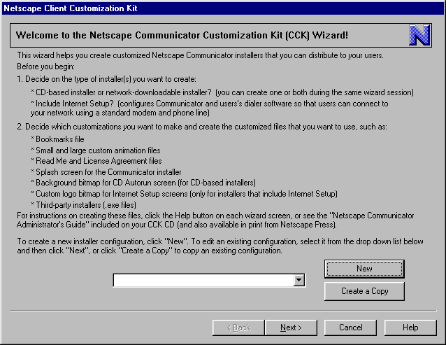
| Feature | Description | Questions |
| New button | Creates a new installer configuration. A dialog will appear so the user can enter a name for the configuration. | Where do new installer configurations get saved? |
| Select an existing configuration (drop down list) | Lets the user edit an existing configuration. | |
| Create a Copy | Lets the user create a copy of an existing configuration and save it as a new configuration. (Works like "Save As") |
Screen 2: Gathering Information
Filename: info.ini
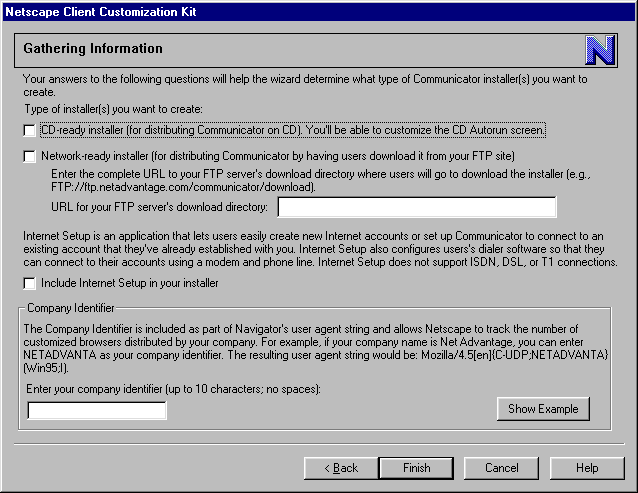
| Feature | Description | Questions |
| CD installer checkbox | If checked, clicking the
"Build Installers" button on last wizard screen will cause a CD-ready installer
to be created.
If checked, the "Customizing the CD Autorun Screen" wizard screen will be displayed. If not checked, this screen doesn't appear. |
|
| Network installer checkbox | If checked, clicking the "Build Installers" button on last wizard screen will cause a Network-ready installer to be created. | |
| URL for FTP server's download directory | Dimmed unless "Network installer" checkbox is checked. This URL is required for network builds. This URL is inserted into the config.ini file so that when the setup.exe stub installer reads the config.ini file, the installer knows where to go to download the JAR files. | |
| Internet Setup checkbox | If checked, the Internet
Setup module is automatically included in the installer when user chooses
"Build Installers" on last wizard screen.
If checked, the "Customizing Internet Setup" and "Customizing Internet Setup - Points of Presence" wizard screens will appear. |
|
| Company Identifier | Appended to user agent string. |
Screen 3: Customizing the Browser - Part One
Filename: branding_page1.ini
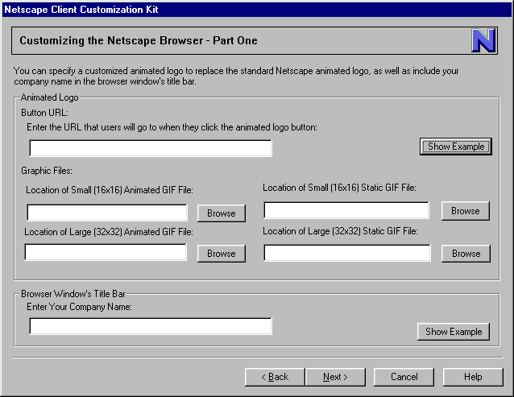
| Feature | Description | Questions |
| Button URL | URL associated with animated logo button. Defaults to home.netscape.com. | |
| Small Animated GIF | 16 by 16 pixel animated GIF file; no default. | |
| Small Static GIF | 16 by 16 pixel still frame file; no default. | |
| Large Animated GIF | 32 by 32 pixel animated GIF file; no default. | |
| Large Static GIF | 32 by 32 pixel still frame file; no default. | |
| Company Name | prepended to "-Netscape" in browser window title bar | character limit? |
Screen 4: Customizing the Browser - Part Two
Filename: customize_page1.ini
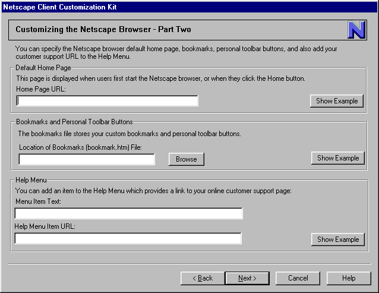
| Feature | Description | Questions |
| Home Page URL | defaults to home.netscape.com. | |
| Bookmarks file | if not specified, default bookmarks file is used. | |
| Help Menu Item Text | no default | |
| Help Menu Item URL | no default |
Screen 5: Customizing the Browser - Part Three
Filename: customize_page3.ini

| Feature | Description | Questions |
| Program Folder name | no default. This text must be appended to the required text "Netscape Communicator". | |
| Readme checkbox | unchecked by default | |
| License Agreement checkbox | unchecked by default | |
| Readme file | defaults to standard Readme | |
| License Agreement file | defaults to standard License Agreement | What kinds of changes to the license agreement do we permit? Must changes be appended to standard agreement or can users replace standard agreement? |
Screen 6: Customizing the Installer
Filename: branding_page4.ini
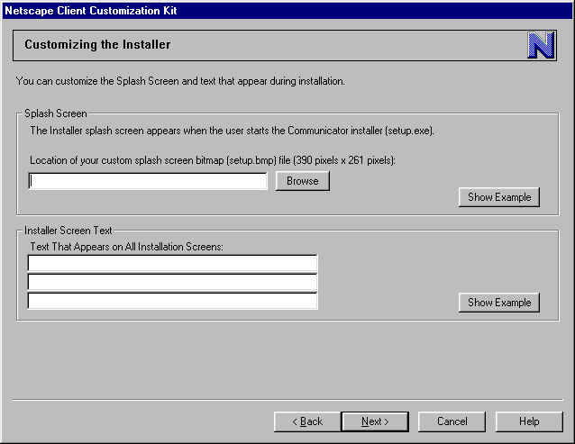
| Feature | Description | Questions |
| Installer splash screen bitmap file | if not specified, default setup.bmp is used. | |
| Installer screen text | this text should be appended to the required blue screen text that must appear on all installer screens. | character limit for entries? |
Screen 7: Customizing the CD Autorun Screen
Filename: branding_page2.ini
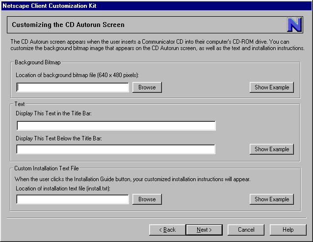
| Feature | Description | Questions |
| background bitmap | defaults to supplied background bitmap file. | |
| title bar text | defaults to what? | character limit? |
| text below title bar | is there a default? | character limit? |
| install.txt | defaults to supplied install.txt |
Note: the above dialog assumes that the user is customizing one CD shell screen that contains two buttons:
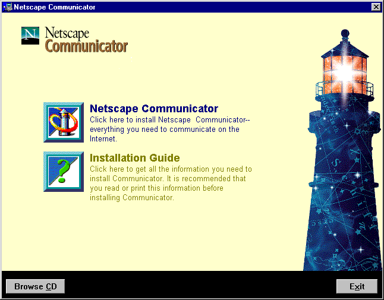
Screen 8: Customizing Internet Setup
Filename: branding_page3.ini
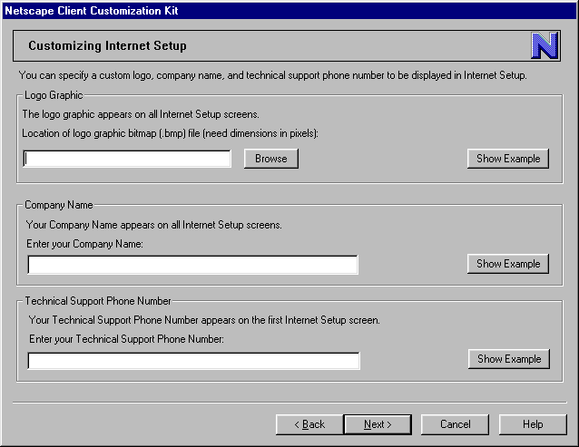
| Feature | Description | Questions |
| Logo graphic | is there a default? | Size of graphic (pixel dimensions)? |
| Company name | is there a default? | character limit on entry? |
| Technical Support Phone number | no default |
Screen 9: Customizing Internet Setup - Points of Presence
Filename: AccountSetup.ini

| Feature | Description | Questions |
| NCI file list | list is empty by default? | Can we call these *.pop files? No CCK user will understand what ".NCI" stands for (Network Configuration ?) |
|
Create button |
Displays dialog asking user to name the file; then opens the file in chosen text editor. New file will consist of a template that user can use to enter his specific network/proxy information. | |
| Edit button | lets user edit selected NCI file in chosen editor. Saving the file closes the editor and returns user to the wizard screen? | |
| Delete button | deletes selected NCI file from list, but not from user's hard disk. | |
| Text Editor | defaults to Notepad. |
Screen 10: Building the Installers
Filename: build_page1.ini
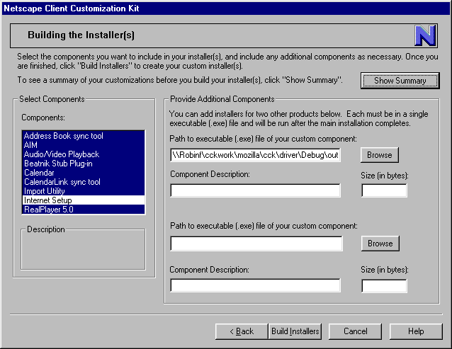
| Feature | Description | Questions |
| Components list | Lists all Communicator components that are provided for including in an installer. User can build a Navigator-only installer by selecting the "Navigator stand-alone" component. Internet Setup will NOT appear in this list. It is automatically included/ not included depending on whether the user chose the "Include Internet Setup" checkbox on screen 2 (Gathering Information). | How are we handling components that are required to be installed (such as AIM)? |
| Path to .exe file | no default | |
| Component Description | no default | |
| Size in bytes | no default | |
| Show Summary button | Displays a dialog that contains a non-editable summary of all the user's inputs to the wizard. | |
| Build Installers button | Displays dialog with progress bar/status messages as installer creation is in progress. |
Screen 11: Installer(s) Completed
Filename: done.ini
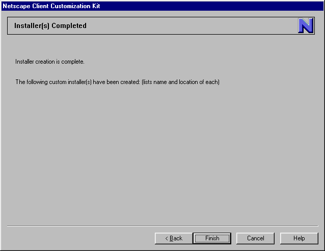
The CCK wizard will offer help for each wizard screen as well as help for each Show Example image.
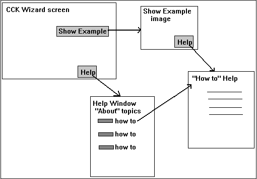
Clicking the Help button in a wizard screen will display a Help window (scrolling text widget implemented via INI file) that contains information about each topic for that wizard screen. To get help with creating a file requested by that wizard screen, the user will click a "How To" button, which opens another Help window that contains the steps necessary to create the desired file.
Clicking the Help button from a Show Example dialog will take the user directly to the "How To" Help window with instructions for creating the file.